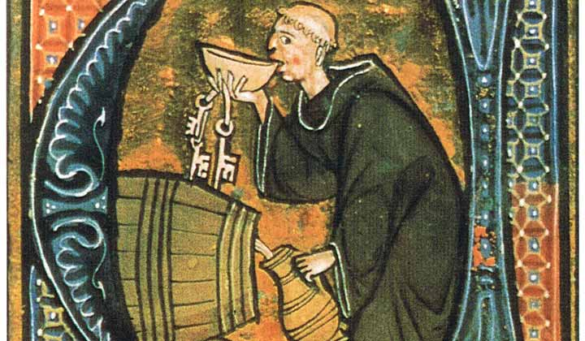
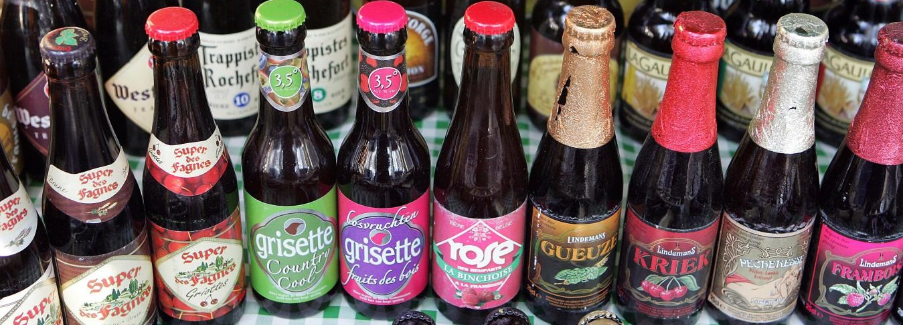

Bière qui coule n'amasse pas mousse
Aujourd’hui, je vous propose de découvrir la bière belge par le Top 10 des meilleures pour affûter vos papilles ! Avec plus de 2500 variétés de bières différentes dans le Plat Pays, il peut être difficile de s’y retrouver. Voici le best of des bières belges à commander en ligne et à déguster tranquillement chez vous…
Sommaire
1. Les prémices de la biére en Belgique 2. Les bières belges les plus connues en quelques dates 3. Les 10 meilleures bières belges 4. Boutique de bières belges en ligne
I-Les prémices de la biére en Belgique
Commençons par quelques anecdotes historiques, afin de résumer ce long cheminement qui a conduit nos chers amis du Plat-Pays à devenir les rois de la bière. Titre qu’ils se disputent d’ailleurs avec leurs voisins allemands et anglais ! Certes, l’origine historique de la bière remonte aux plaines de Mésopotamie, il y a 8000 ans. Ces premières bières s’apparentaient d’ailleurs davantage à du pain ou de la pâte à crêpes ! Il faudra attendre un sacré paquet d’année avant que n’émerge la tradition brassicole belge. On peut dater son début au Moyen-Âge, en 1308 plus précisément, date à laquelle la célèbre Guilde des Brasseurs de Bruges voit le jour. Un peu comme les chevaliers de la Table Ronde, les brasseurs s’organisaient effectivement en guildes. Chacune avec ses points distinctifs et plus-values aromatiques, chaque recette avec ses ingrédients secrets, qu’elle protégeait jalousement.  En 1851, tout ce savoir-faire va largement se diffuser ! Comment ? Grâce au Traité sur la Fabrication des Bières et la Distillation des Grains. Un grand coup de pied dans les traditions, et une vraie vulgarisation sur les méthodes de fabrication de la bière. C’est le début d’un empire brassicole qui fait office de référence aujourd’hui. En 1869, on comptait alors près de 200 brasseries en Belgique. Au début du 20ème siècle, 25% des céréales qui entraient dans l’enceinte de la ville de Bruxelles étaient destinées au brassage ! La 2nde Guerre Mondiale marque un petit passage à vide, situation géopolitique oblige.
II-Les bières belges les plus connues en quelques dates
Voici donc les grandes dates contemporaines à retenir : * En 1932, la célèbre Orval est mise au point par des moines dans le but de récolter des fonds pour rebâtir leur abbaye * En 1954, on brasse la première Leffe * En 1966, nous assistons à la naissance de la première bière blanche belge qui s’exporte, la fameuse Hoegaarden * En 1970, la brasserie Bosteels remet au goût du jour la recette mythique de M. Kwak * En 1982 nait La Chouffe, produite à seulement 47 litres ! * En 1989, la brasserie Huygue lance la Delirium Tremens. Le succès est international ! * En 2012, la Belgique produit quasiment 20 millions d’hectolitres de bière… Dont 60% sont exportés * En 2021, l’Abbaye Achel perd son titre de bière Trappiste : il n’y a donc plus que 5 bières trappistes belges dans le monde
III-Les 10 meilleures bières belges
En France, la bière belge occupe une place de choix sur les étals de nos cavistes et à la carte des meilleurs bars à bière. L’Hexagone a beau être devenu en un tour de fourquet un pays presque autant brassicole que viticole, il n’en demeure pas moins que les beer-lovers français continuent à beaucoup apprécier la générosité des petites mousses belges. Voici 10 merveilles à avoir goûtées au moins une fois dans sa vie !
IV-Boutique de bières belges en ligne
Ronde, chaleureuse, levurée et bien céréalières, les bières belges ont la douceur et un beau degré d'alcool comme trait commun. Je découvre
Pour aller plus loin...
Découvrez notre article sur les bières du monde et notre offre de bière locale